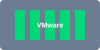

Expérience Professionnelle
Parcours technique en Cloud, DevOps et Cybersécurité
Consultant Cloud / DevOps / Infrastructure & Cybersécurité
Expertise technique et pédagogique dispensée auprès d'établissements d'enseignement supérieur, d'entreprises et d'environnements techniques variés, couvrant le cloud, l'automatisation, l'administration système Linux et la cybersécurité.
Activité basée sur de multiples interventions courtes (3 à 21 jours) regroupées par domaines d'expertise :
Cloud & Infrastructure as Code
- Déploiement et automatisation d'infrastructures sur AWS et Azure
- Provisionnement automatisé des ressources via Terraform
- Déploiement de services Linux et d'environnements conteneurisés
- Mise en place d'architectures Docker et Kubernetes dans des contextes techniques et pédagogiques
- Administration et sécurisation des systèmes Linux
DevOps & CI/CD
- Conception, mise en place et maintenance de pipelines CI/CD
- Automatisation des tâches d'administration et de déploiement
- Industrialisation des workflows Docker et Git
- Déploiement et configuration d'outils DevOps (Jenkins, SonarQube)
- Support technique et conseil sur les bonnes pratiques d'automatisation
Sécurité & Hardening
- Administration des systèmes Linux et Windows Server
- Hardening Linux et sécurisation des services exposés
- Réalisation d'audits techniques et de contrôles de sécurité
- Analyse de vulnérabilités et réduction de la surface d'attaque
- Support à l'exploitation d'environnements techniques sécurisés
Cybersécurité Offensive
- Analyses de sécurité et travaux de sécurisation des infrastructures
- Interventions sur la sécurité réseau, applicative et le contrôle d'accès
- Participation à des projets de sécurité offensive et d'analyse technique
- Sensibilisation et formation aux bonnes pratiques de cybersécurité
Formation & Pédagogie
- Conception et animation de formations techniques niveau Master 1 et Master 2
- Enseignement sur Linux, Cloud, Docker, Kubernetes, CI/CD et cybersécurité
- Encadrement de soutenances et accompagnement de projets techniques
- Vulgarisation de sujets techniques complexes
Responsable Opérationnel Sécurité / Support N2
Alternance au sein d'une équipe d'exploitation et de support technique (niveau N2) intervenant sur des environnements clients grands comptes, avec une activité principale centrée sur le traitement d'incidents réseau, systèmes et téléphonie, et des contributions sur des sujets de sécurité opérationnelle.
Support & Résolution d'Incidents
- Traitement et résolution d'incidents techniques sur infrastructures réseaux, systèmes et téléphonie
- Support N2 et analyse des dysfonctionnements en environnement de production
- Analyse d'incidents réseau et diagnostic de problèmes de connectivité et de services
Sécurité Opérationnelle
- Participation à des activités de sécurité opérationnelle sur environnements Linux et systèmes internes
- Identification et qualification de vulnérabilités systèmes, réseau et applicatives
- Contribution à des actions de hardening et de réduction de surface d'attaque
Amélioration Continue
- Participation à des travaux d'amélioration continue de la posture de sécurité
- Animation ponctuelle d'ateliers techniques autour des bonnes pratiques de cybersécurité
Mes Projets Techniques
Sélection de mes travaux par domaine d'expertise
Infrastructure AWS Multi-AZ Haute Disponibilité
Conception et déploiement d'une infrastructure résiliente avec Terraform, garantissant 99.9% de disponibilité.
Contexte
Déploiement d'une infrastructure cloud modulaire et reproductible pour héberger des applications web critiques. Objectif : garantir une disponibilité élevée avec tolérance aux pannes.
Stack Technique
- AWS (EC2, RDS Aurora, ELB, VPC, IAM, CloudFront, Route53)
- Terraform (HCL, modules, backend S3)
- Infrastructure as Code
Points Clés
- Modularité : Architecture modulaire réutilisable pour différents environnements
- Sécurité : Security Groups restrictifs, IAM roles avec principe de moindre privilège, chiffrement KMS
- Automatisation : Déploiement en une commande, gestion d'état avec backend S3

Pipeline CI/CD avec Jenkins et SonarQube
Pipeline automatisé intégrant tests unitaires, analyse de sécurité et déploiement rolling update.
Contexte
Création d'un pipeline CI/CD complet pour une application PHP/MySQL avec qualité de code garantie.
Stack Technique
- Jenkins (pipelines as code)
- SonarQube (analyse statique)
- Docker, GitHub Webhooks, PHPUnit
Points Clés
- Automatisation : Déclenchement automatique via GitHub webhooks
- Qualité : Gates SonarQube bloquantes (coverage > 80%, 0 bug critique)
- Sécurité : Scan OWASP Dependency Check intégré

Cluster Kubernetes Sécurisé
Déploiement d'un cluster production avec Calico, RBAC et monitoring Prometheus/Grafana.
Contexte
Mise en place d'un cluster Kubernetes pour héberger une application e-commerce avec scalabilité horizontale.
Stack Technique
- Kubernetes (kubeadm, v1.27)
- Docker / containerd
- Calico (CNI avec Network Policies)
- Helm, Prometheus, Grafana
Points Clés
- Sécurité : Network Policies, RBAC, Pod Security Policies
- Disponibilité : HPA, Liveness/Readiness probes
- Monitoring : Stack Prometheus/Grafana complète

Hardening Apache - Benchmark CIS
Sécurisation complète d'un serveur Apache avec TLS 1.3, ModSecurity et Fail2Ban.
Contexte
Application des recommandations CIS Level 1 et 2 pour sécuriser un serveur web hébergeant une application sensible.
Stack Technique
- Apache 2.4, OpenSSL
- ModSecurity (OWASP CRS)
- Lynis, Fail2Ban, TLS 1.3
Points Clés
- TLS : TLS 1.3, HSTS avec pré-chargement, OCSP Stapling
- WAF : ModSecurity avec règles OWASP CRS
- Protection : Fail2Ban pour brute-force, rate limiting

Pour explorer tous mes projets par domaine :
Certifications & Accréditations
Validations officielles de mes compétences techniques

AWS Academy Educator
ID: 6bde73e0-f2a8-4621-b2a7-858a0a06a9de
Formateur agréé AWS, certifié par Credly. Permet de dispenser des formations officielles sur les services et architectures cloud AWS.
Kubernetes Essential Training
ID: LinkedIn Learning
Formation complète de 2h27 sur Kubernetes. Couvre les fondamentaux de l'orchestration de conteneurs, installation de clusters, gestion de Pods et services.

Learning vSphere 6
ID: LinkedIn Learning
Formation de 2h29 sur VMware vSphere 6. Architecture du datacenter virtualisé, installation d'ESXi 6 et vCenter Server 6, gestion de VM.
Windows Server 2019 Essential Training
ID: LinkedIn Learning
Formation complète de 4h23 sur Windows Server 2019. Installation, configuration du stockage, de l'identité et de l'accès, virtualisation avec Hyper-V.
Windows PowerShell 7 Essential Training
ID: LinkedIn Learning
Formation complète de 2h12 sur Windows PowerShell 7. Écriture de scripts, gestion de variables, automatisation des tâches d'administration.
En préparation
- CKA: Certified Kubernetes Administrator
- AWS Certified Solutions Architect - Associate
- AWS Certified SysOps Administrator
- Microsoft Certified: Azure Administrator Associate
- Certified Jenkins Engineer
- Docker Certified Associate
Toutes les certifications peuvent être vérifiées via les plateformes officielles (Credly, LinkedIn Learning).
Compétences
Expertise technique en Cloud, DevOps et Cybersécurité
Domaines d'Expertise
Cloud Computing
AWS, Azure, IaC, Architecture Cloud
DevOps & CI/CD
Automatisation, Pipelines, Conteneurs
Cybersécurité
Hardening, Pentest, SOC, Sécurité Cloud
Infrastructure
Réseaux, Systèmes, Virtualisation
Langues
Cloud & DevOps
Cybersécurité
Infrastructure & Réseaux
Développement & Scripting
Outils & Méthodologies
Compétences Fonctionnelles & Soft Skills
Formation
Parcours académique en Cybersécurité et Cloud Computing
Mastère Cybersécurité – Spécialisation Cloud Computing
Mastère spécialisé en cybersécurité avec une focalisation sur le Cloud Computing.
Principaux enseignements :
- Sécurité des infrastructures cloud AWS / Azure
- Architecture systèmes sécurisés
- Virtualisation & conteneurisation
- Cloud computing
- DevOps & automatisation
- Sécurité des infrastructures
Licence EPOCS — Électronique & IoT
Licence professionnelle en Électronique et Internet des Objets.
Principaux enseignements :
- Systèmes embarqués
- Réseaux industriels
- Électronique appliquée aux objets connectés
À propos de moi
Ingénieur Cloud, DevOps et Cybersécurité, spécialisé dans la conception et l’industrialisation d’infrastructures automatisées et sécurisées sur environnements Linux et cloud.
J’interviens sur la mise en place d’architectures orientées fiabilité, scalabilité et sécurité, avec une approche centrée sur l’automatisation et l’industrialisation des systèmes.
Mon approche technique repose sur :
- Infrastructure as Code pour garantir reproductibilité, traçabilité et gestion versionnée des environnements
- Pipelines CI/CD pour sécuriser et accélérer les cycles de déploiement
- Approche DevSecOps intégrant la sécurité dès la conception et dans toute la chaîne de delivery
- Optimisation cloud orientée performance, résilience et maîtrise des coûts
En parallèle, je maintiens une activité continue de montée en compétence à travers des environnements de lab, des projets personnels en cloud et automatisation, ainsi qu’une pratique régulière de la cybersécurité opérationnelle (Root-Me, environnements virtualisés).
J’interviens également dans un cadre pédagogique en animation de formations techniques (Linux, Docker, Kubernetes, Cloud et cybersécurité) auprès d’étudiants de niveau Master ainsi que d'entreprises.